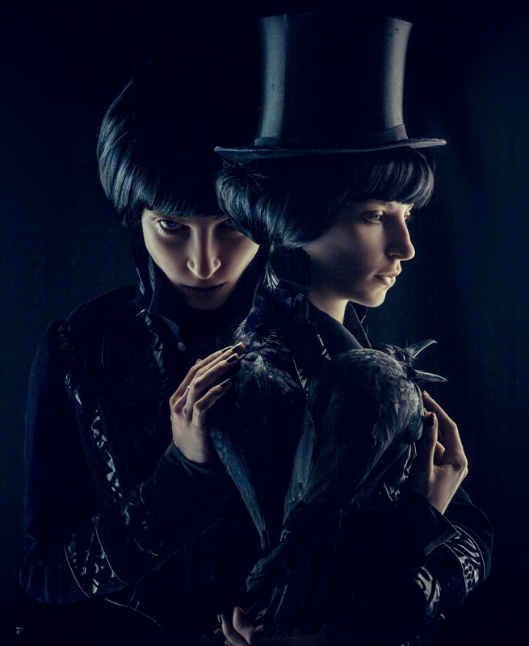
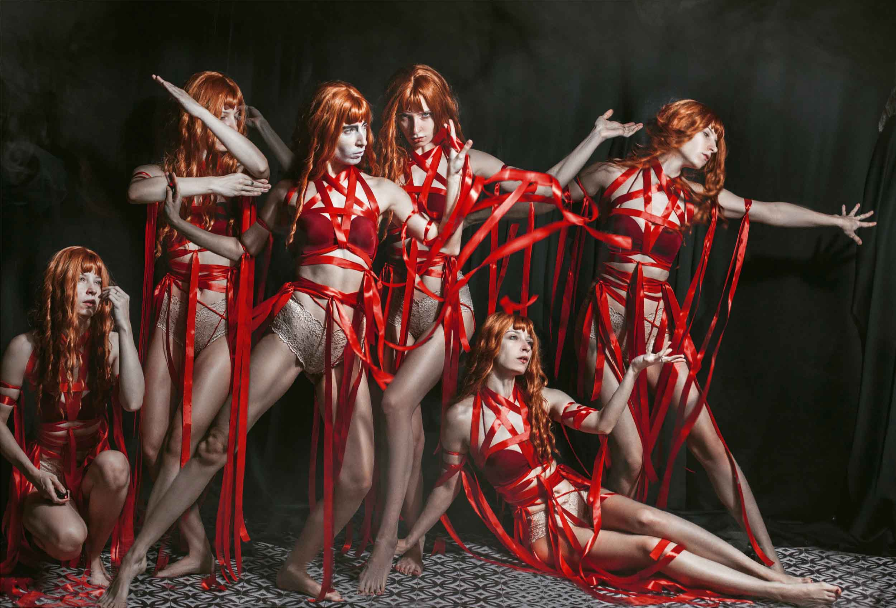

-
Identity Icons
self portraiture, collected
Over the past years, light-studies, experiments with costumes, wigs and and stories created a collection of alternative identities I slipped into. Immersion into different worlds became an important tool for my personal self-exploration. Collected from the last decade.
2014 - ongoing
since 1845
Marshall Egart
- 
Dr. Jekyll & Mr. Hyde
Daughter of the night
The circus fair sisters
- 
The dance company
The spring sacrifice
before the grand show

la vie en rose
Alice meets the prince
The mad hatter
The heart queen
The detective
Lady from Shanghai I
Lady from Shanghai II
Ship wreck queen
native (obelisk)